BGP Implementation and Issues
Border and Interior Routers
At this point, we have an intuitive picture of how BGP works between ASes. In this section, we’ll show how BGP is actually implemented at the router level. In doing so, we will also show how BGP interacts with the intra-domain routing protocols from earlier.
So far, our model of inter-domain routing has treated an entire AS as a single entity, importing and exporting paths.
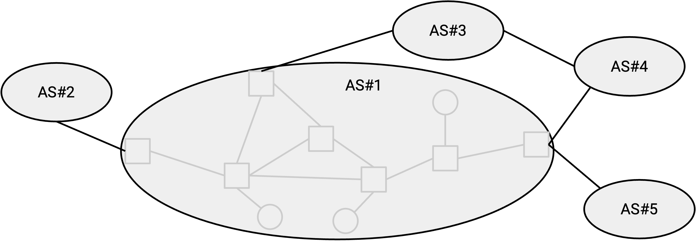
However, in reality, the AS contains many routers (and hosts) connected by links.
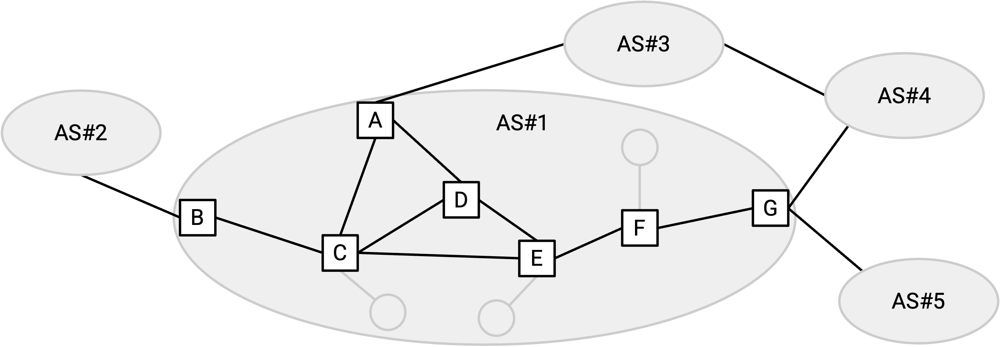
In order to actually implement BGP, we need all the routers inside the AS to work cooperatively to act as a single node.
Within an AS, we will classify all routers into two types. Border routers have at least one link to a router in a different AS. Interior routers only have links to other routers within the same AS.
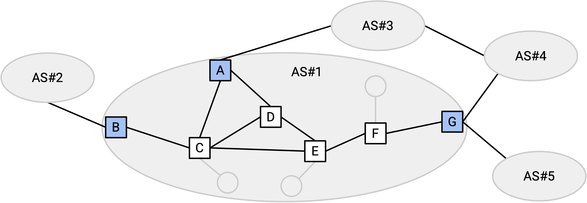
Only the border routers need to advertise routes to other ASes. Sometimes, we call the routers advertising BGP routes BGP speakers. The BGP speakers need to understand the semantics and syntax of the BGP protocol (how to read and create a BGP announcement, what to do when receiving an announcement, and so on).
External and Internal BGP Sessions
A BGP session consists of two routers exchanging information between each other.
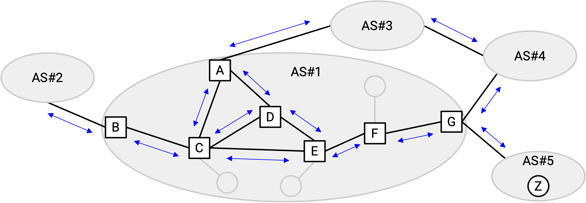
An external BGP (eBGP) session is between two routers from different ASes. eBGP sessions can be used to exchange announcements between different ASes and learn about routes to other ASes. Only border routers participate in eBGP sessions (since eBGP requires talking to a different AS).
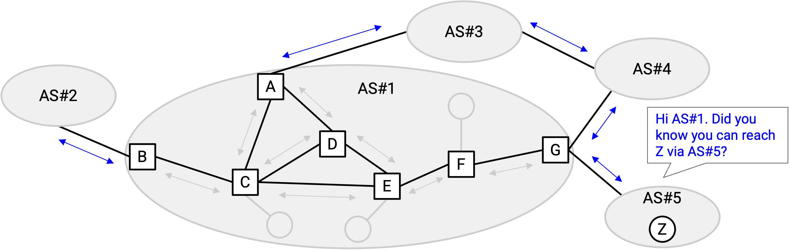
By contrast, an internal BGP (iBGP) session is between two routers in the same AS (not necessarily directly connected by a link). More specifically, if a border router learns about a new route, it can use iBGP to distribute that new route to the other routers in the AS. This allows all the routers in the AS to coordinate and act together as one entity. Both border and internal routers participate in iBGP sessions.
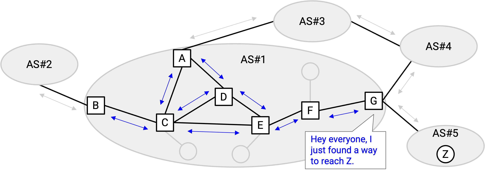
eBGP and iBGP sessions are different from interior gateway protocols (IGP). These are the intra-domain routing protocols (e.g. distance-vector, link-state) that are deployed within an AS to route packets inside the AS.
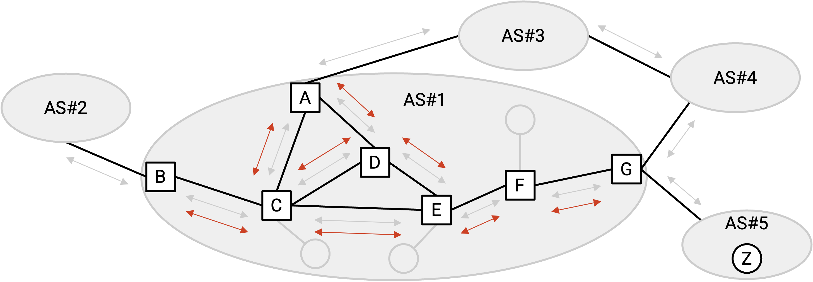
It’s easy to confuse iBGP and IGP. Both exchange messages within the same AS. However, iBGP is part of an inter-domain protocol, helping routers learn about paths to other ASes. IGP is an intra-domain protocol, helping routers learn about paths to destinations in the same AS.
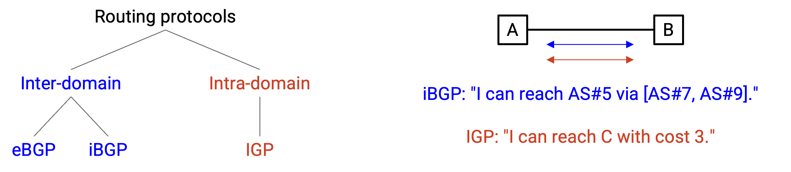
eBGP, iBGP, and IGP work together to establish routes from any one router to any other router in the Internet (even if the routers are in different ASes).
First, each AS runs IGP to learn least-cost paths between any two routers inside the same AS.
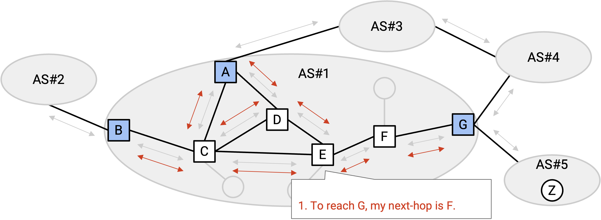
Next, the ASes run eBGP, advertising routes to each other to learn about routes to other ASes.
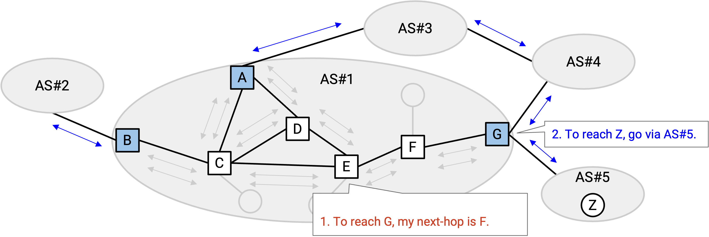
Finally, the ASes run iBGP, so that a router that has learned about an external route can distribute that route to all the other routers in the same AS.
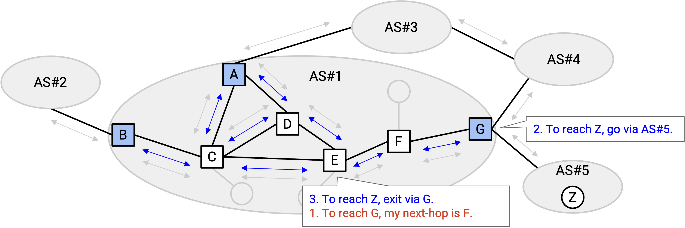
The routes learned from eBGP, iBGP, and IGP can be used to send packets anywhere in the Internet. If the destination is within the same AS (same IP prefix), we can use the routes learned from IGP to forward the packet. If the destination is in a different AS (different IP prefix), we can think back to iBGP, which told us about any external routes discovered by anybody in my AS. Using the iBGP results, we can figure out which border router is on that external route. Then, we can use IGP to forward the packet to the correct border router (who will then forward the packet to the next AS).
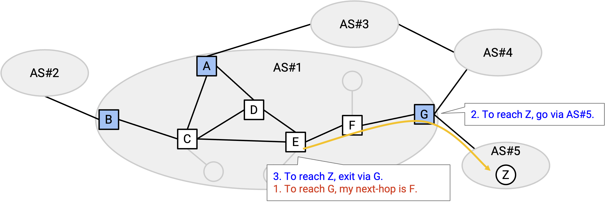
As a concrete example, let’s say E wants to send packets to Z. First, every router in E’s AS runs IGP, learning all the internal routes. Next, some router in AS#5 advertises a route to Z using eBGP. At this point, only G knows that it can reach Z. Finally, G tells all routers in its own AS that it can reach Z, using iBGP.
E has heard from iBGP that G, a router in the same AS, can reach Z. Using the IGP routes, E can send the packet to G (forwarding to F first). Then, G can use the route learned in eBGP to send the packet to Z.
The border router who advertises a route to an external destination is sometimes called the egress router for that destination. This is the router who can help your packet exit the local network and move to other networks closer to the destination. In the example above, G is the egress router for destination Z.
A consequence of these protocols is that every router has two forwarding tables. One is a table mapping all internal destinations (same AS) to a next hop, populated with information from IGP. The other is a table mapping all external destinations to an egress router (who knows a route to the external destination), populated with information from eBGP.
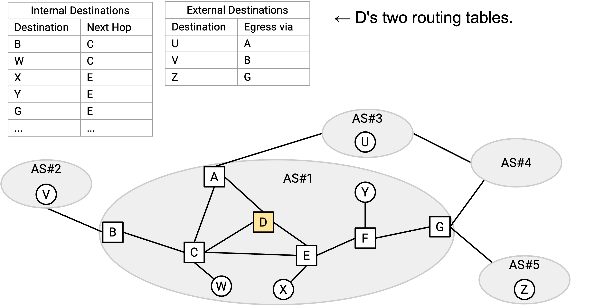
Note that in the eBGP table, the egress router is not necessarily a next hop. The egress router might be several local hops away, but we use IGP to reach that egress router.
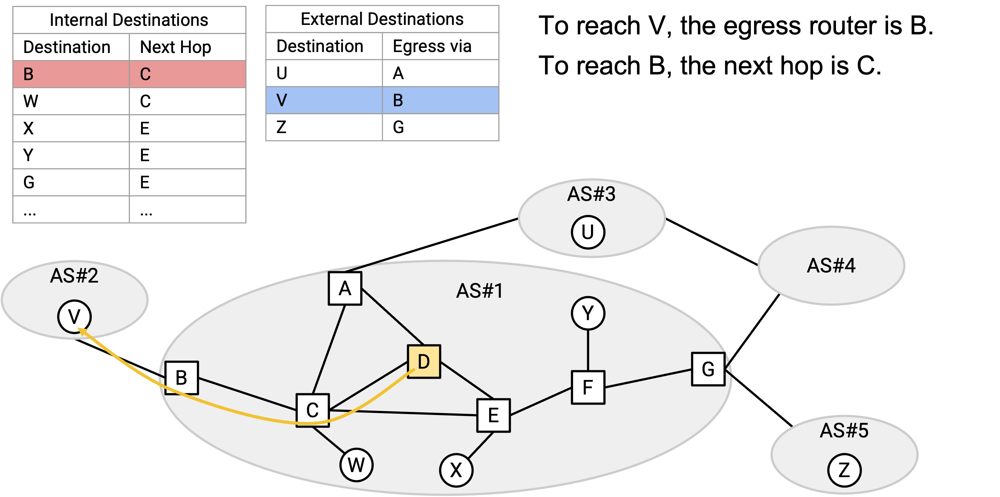
We’ve seen how eBGP (path-vector, advertising routes) and IGP (distance-vector or link-state) are implemented as algorithms. How is iBGP implemented? When a border router installs a new route to a destination, it has to inform the other routers in the AS. One simple solution is to have the border router directly tell every other router in the AS.
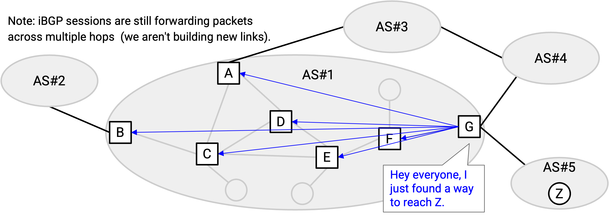
This solution is relatively simple, though it requires every border router to have an iBGP session with every other router. In a network with B border routers and N routers total, this protocol would require BN iBGP connections, and might scale poorly as local networks get larger.
Note: In reality, there are other ways to combine inter-domain and intra-domain routers. You can look up “route reflectors” if you’re interested, though they won’t be covered in this class.
Multiple Links Between ASes: Hot Potato Routing
So far, in our AS graph, we’ve shown two ASes having a single link (edge) between them if they are connected. In practice, because an AS actually consists of many routers, it’s possible for two ASes to be connected by multiple links.
In practice, it can be useful to have multiple links between large ASes. For example, Verizon and AT&T are very large ASes with infrastructure across the entire United States. Suppose there was only one link between the two ASes on the west coast. If a Verizon router in the east coast and an AT&T router in the east coast wanted to communicate, the packet would have to travel across the country on Verizon’s network, traverse the link into AT&T’s network, and then travel back across the country to the destination.
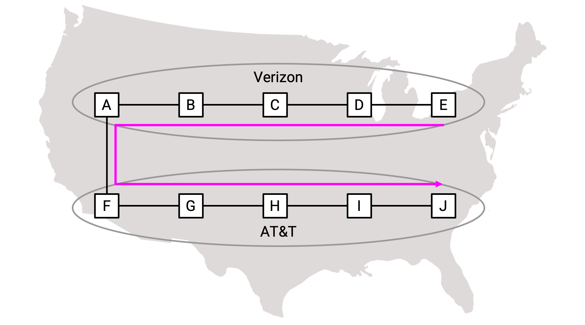
Multiple links between two ASes also means that there can be multiple paths between two routers that pass through the same ASes. At the AS level, both of these paths go through the same ASes, and our earlier model made no distinction between them. However, in our more detailed model, both paths need to be exported, and a preferred route has to be imported.
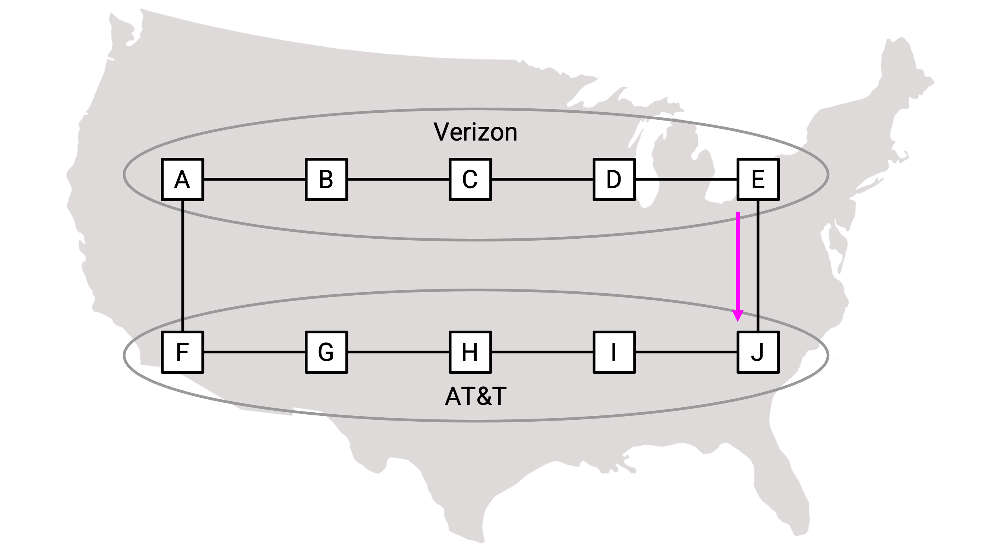
If there are two routes, which route does the importing AS prefer?
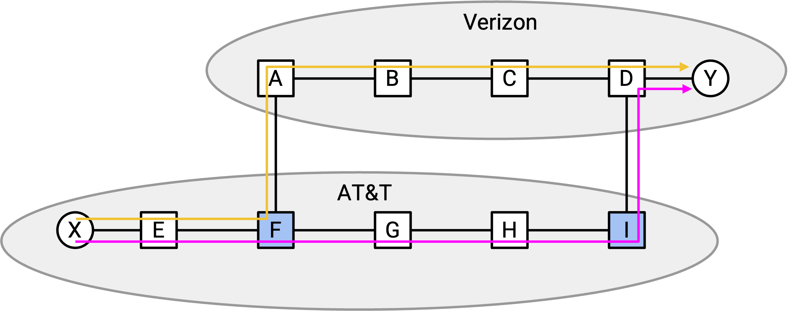
Bandwidth costs money, so I would prefer if this traffic traveled as far as possible on infrastructure owned and paid for by other people, and traveled as little as possible on my own infrastructure. Therefore, the orange path is preferred.
More formally, the importing AS receives two announcements: one from the west router, and one from the east router.
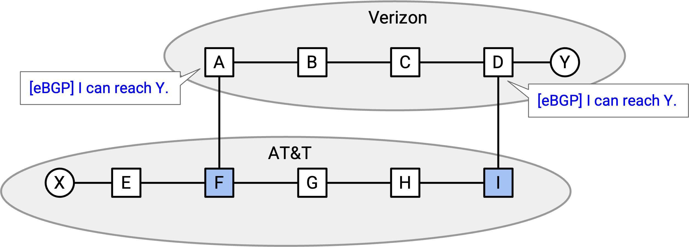
Using iBGP, every router inside the AS sees both announcements. One says, the egress router is the west router, and the other says, the egress router is the east router. Every router has to decide which announcement to import.
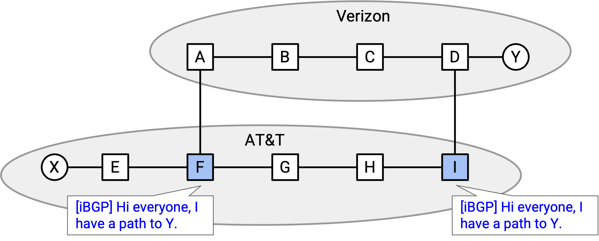
Let’s focus on router E. Using IGP, this router can figure out the distance to the west egress router (F), and the distance to the east egress router (I). Since the west egress router (F) is closer, routing packets via the west egress router (F) will use up less of this AS’s bandwidth. Therefore, this router will import the path via the west egress router (F). Another router, like one closer to the east egress router (I), might decide to import a different path.
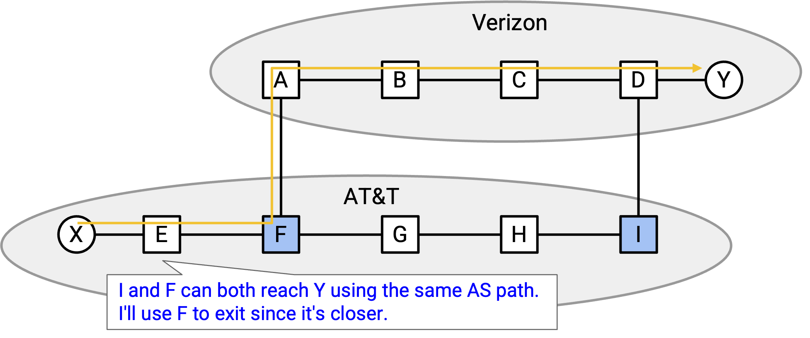
This strategy of selecting the nearest egress router is sometimes called hot potato routing. We want the packet to leave our AS as soon as possible, and start traveling over somebody else’s links as soon as possible.
Multiple Links Between Routers: MED
What if a router is equally close to both possible egress routers?
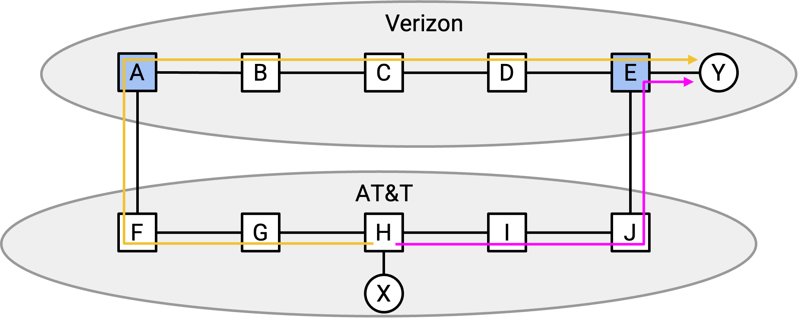
In order to tiebreak, the exporting AS can announce a preference for one route over the other.
Which route does the exporting AS prefer? Again, since bandwidth costs money, the exporting AS prefers the pink path, which uses less of its bandwidth. In the announcement of the pink path, the exporting AS can additionally say “I prefer if you used this path,” and in the announcement of the orange path, the exporting AS can additionally say “I prefer if you avoided this path.”
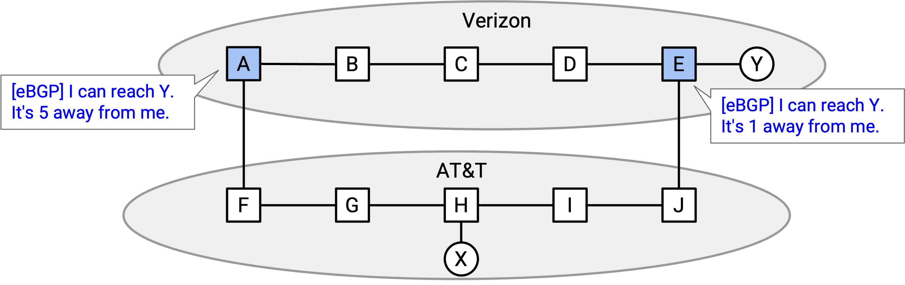
Now, the router that is equally close to both egress routers can see this extra information in the iBGP announcement.
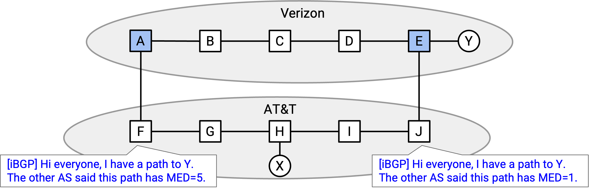
Using this extra information, the router can select the egress router on the pink path, since the exporting AS preferred this path.
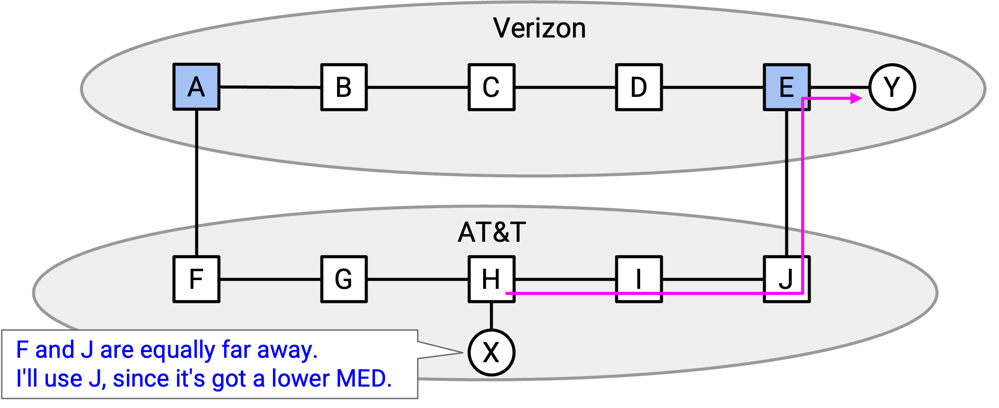
This additional information in the exporting announcement is called the Multi-Exit Discriminator (MED). From the perspective of the exporter, it indicates my preferred router for entering my network. From the perspective of the importer, it indicates the other AS’s preferred router for exiting my network and entering the other AS’s network.
Another way to interpret the MED is, the distance to the destination, via this router. The exporter can say, “the west coast router is 3 hops away from the destination,” and “the east coast router is 12 hops away from the destination.” Lower MED numbers are preferred, since the exporter wants to use as little of its own bandwidth as possible. The exporter would rather use 3 of its own links, instead of 12 of its own links.
Import Policy Priority
Our more detailed model, where two ASes can be connected with multiple links, means that we now have additional import policy rules, in addition to the Gao-Rexford rules. When you receive multiple announcements for the same destination, select a path based on these tiebreaking rules, in this order:
- Use the Gao-Rexford rules. Select the path advertised by a customer, over the path advertised by a peer, over the path advertised by a provider.
- If multiple paths have the same Gao-Rexford priority (e.g. two paths from customers), select the shorter path (the path passing through fewer ASes).
- If multiple paths have the same length, select the path with the closer egress router (using IGP to find distance to each egress router).
- If multiple paths have the same distance to egress router, select the path with the lower MED (where MED is included in the advertisement).
- If multiple paths have the same MED, tiebreak arbitrarily (e.g. pick the router with the lower IP address).
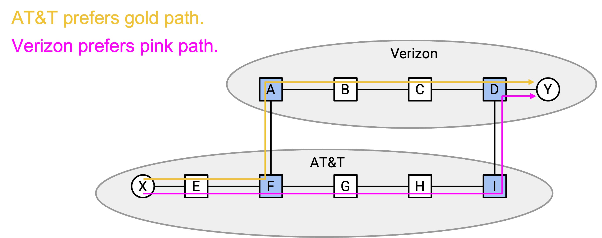
Notice that closest egress router (hot potato routing) and MED are often contradictory. Every AS prefers to minimize their own bandwidth usage, and wants the packet to be carried on other ASes’ bandwidth.
As the exporting AS, I want the packet to enter my AS as close to the destination as possible. This means I want the importing AS to carry the packet really far (long path to egress).
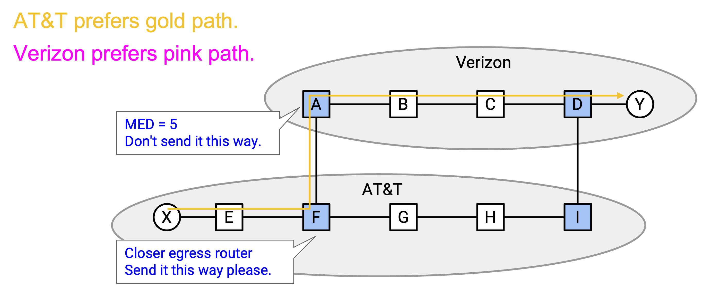
By contrast, as the importing AS, I want to carry the packet as little as possible (short path to egress). This means I want the packet to enter the other AS as far from the destination as possible (force the other AS to do all the work).
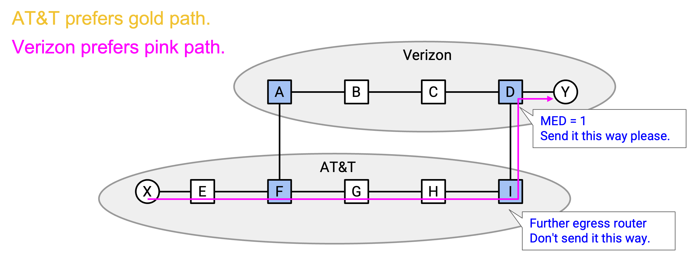
One consequence of this contradiction is that paths through the Internet are often asymmetric. If two hosts are sending packets back and forth, the path in one direction might be different from the path in the other direction.
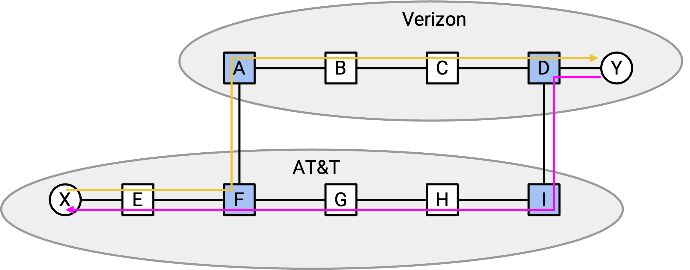
In this example, for eastbound packets, A picks the west egress router and forces B to carry the traffic most of the way. In the other (westbound) direction, B picks the east egress router, and forces A to carry the traffic most of the way.
Fundamentally, BGP allows this behavior because every AS is granted the autonomy to set their own policy (here, that policy is hot potato routing).
In practice, sometimes ASes will try and implement more clever strategies to trick other ASes into carrying the packet further. Or, an AS with better bandwidth might agree to carry your traffic further for you, if you pay a premium fee.
BGP Message Types and Route Attributes
Recall that a protocol must specify syntax and semantics. Specifically, BGP must specify the structure of messages being sent and received. BGP must also specify what a router should do when it receives a message.
There are four different BGP message types. Open messages can be used to start a session between two routers to communicate with each other. KeepAlive messages can be used to confirm that a session is still open, even if messages haven’t been sent recently. Notification messages can be used to process errors. We won’t describe these first three message types in any further detail.
We’ll focus on the fourth and most interesting message type, Update. These messages are used to announce new routes, change existing routes, or delete routes that are no longer active.
The Update message contains a destination, represented as an IP prefix. The message also contains route attributes, which can be used to encode any useful information corresponding to that IP prefix. The route attributes are a set of name-value pairs, where the name indicates the type of attribute, and the value indicates the value of that attribute. A non-networking example of attributes might be: color=red, shape=triangle. The attribute names are color and shape, and they correspond to values of red and triangle, respectively.
Some attributes are local to an AS, and are only exchanged in iBGP messages. Other attributes are global, and can be sent in eBGP advertisements.
There are many BGP attributes, but we’ll focus on three important ones, which are used to encode the different tiebreakers for importing paths.
The LOCAL PREFERENCE attribute encodes the Gao-Rexford import rules (top priority tiebreaker) inside a specific AS. An AS can assign a higher value to more preferred routes (e.g. from customers), and a lower value to less preferred routes (e.g. from providers). This attribute is local, and only carried in iBGP messages. This attribute is not sent to other ASes in eBGP announcements, because other ASes don’t need to know about this AS’s preferences.
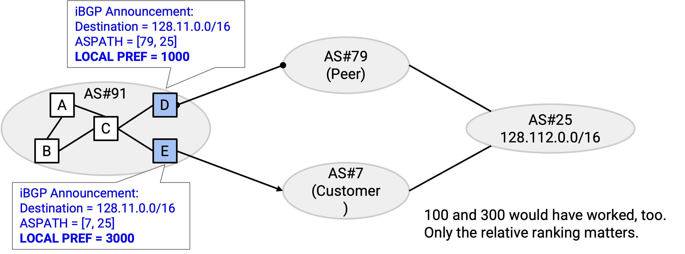
As an example, suppose router E receives an eBGP announcement from AS#7, and router A knows that AS#7 is a customer. Then, in the iBGP message, router E can set a local preference value of 3000 (high number). Now, every other router in the same AS knows that router E can reach the destination it’s announcing, via the path in the ASPATH attribute, with a local preference of 3000.
By contrast, if router D receives an eBGP announcement from AS#79, and this AS is a peer, then in the iBGP message, router D can set a lower local preference value of 1000 and then distribute this path (with lower local preference) to the other routers in the AS.
The local preference numbers are arbitrary, and only their relative ranking is important. In the example above, the numbers could have been 300 and 100 instead of 3000 and 1000, and the behavior would be the same. The local preference numbers are often set manually by operators.
The ASPATH attribute contains a list of ASes along the route being advertised (in reverse order). This attribute is global, and can be sent in eBGP announcements.
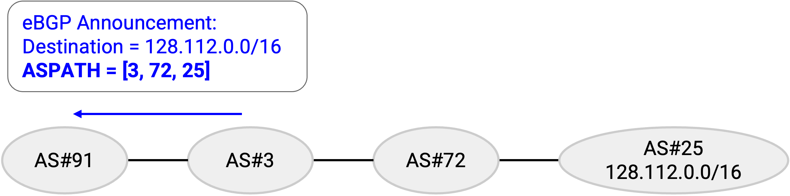
As an example, an announcement would have IP prefix of the destination (128.112.0.0/16), and an ASPATH attribute of [3, 72, 25].
The ASPATH is the second priority tiebreaker when importing paths. If two announcements have the same local preference (e.g. both are from customers), then we’ll select the shorter path. ASPATH tells us the length of each path, measured by the number of ASes the path goes through.
If the local preference and path length are tied, the third priority tiebreaker is the IGP cost to the egress router. This cost is stored in the router’s local forwarding table (e.g. a local distance-vector protocol would store the cost to every other router in the same AS).
The MED attribute encodes the preferences of the exporting AS. Equivalently, this attribute represents the distance from the exporting router to the destination (lower numbers are preferred).
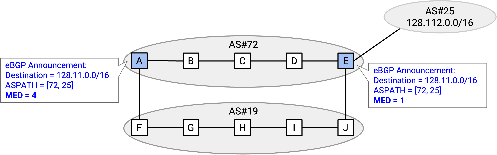
For example, if there are two links between these two ASes, both border routers from the exporting AS will announce a path. The ASPATH and destination are the same, since the path of ASes to the destination is the same in both cases. However, the west router will include a lower MED attribute number, than the east router. This says: when possible, please route packets for the destination through my west router (lower number), because this router is closer to the destination.
If the local preference, path length, and distance to egress router are all tied, the fourth priority tiebreaker is the MED number inside each announcement.
Issues with BGP
BGP has no built-in security guarantees. A malicious AS could lie and advertise a route to a destination, even if the AS cannot reach that destination. A malicious AS could also advertise a very cheap route to a destination, even if that cheap route doesn’t actually exist. This could encourage other ASes to route packets through the malicious AS, where the attacker could delete or modify packets passing through the malicious AS. These attacks are called prefix hijacking. There is active research on using cryptography to secure BGP, though such protocols are not widely deployed.
BGP prioritizes policy over least-cost when selecting paths. Also, because BGP measures path length in terms of the number of ASes, the path length can be misleading (e.g. one AS could contain 2 routers or 200 routers along the path being advertised). This can lead to issues where packets don’t always take least-cost paths, and it’s difficult to reason about performance on the Internet. Some might classify these as issues, though they may be more of an intentional design trade-off. The designers of BGP made a conscious design choice to prioritize policy and hide the internal topology of an AS, at the expense of performance.
BGP is complicated to implement. There are many subtle implementation details that we didn’t cover. Even in the topics we covered, certain configurations like local preference or MED numbers have to be manually set by the operator, and incorrect configurations could lead to incorrect paths spreading through the network. BGP misconfigurations can often lead to Internet outages, and there is active research on tools to verify that BGP is properly configured.
BGP requires certain assumptions (everybody is following the Gao-Rexford rules, AS graph forms a hierarchy, no provider-customer cycles) in order to guarantee reachability and convergence. If these assumptions don’t hold (e.g. an AS chooses its own policy that violates Gao-Rexford), BGP can produce unstable behavior, where routes never converge, or cycles and dead-ends appear.